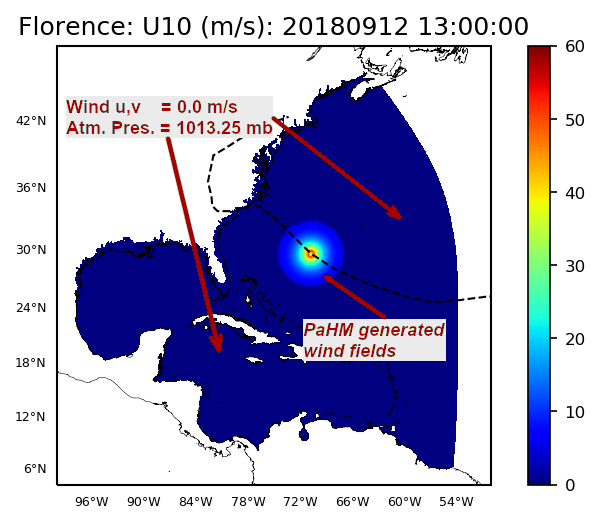
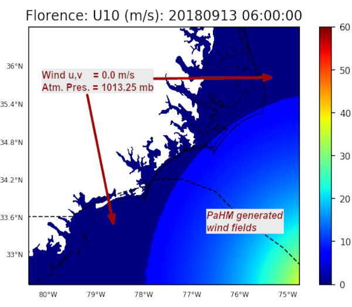

|
|
version 1.0.0
Parametric Hurricane Modeling System
|

|
|
|
version 1.0.0
Parametric Hurricane Modeling System
|
|
Given the limitations of the TC parametic models discussed in sections [Holland 1980] and [Generalized Asymmetric Vortex Holland], PaHM performs as expected and with the anticipated accuracy near the region of the path of the tropical storm. PaHM's capability to run coupled with ocean and wave models makes the system a strong candidate for on-demand, hurricane forced storm surge and inundation simulations. The simulation results for Hurricane Florence were promising on predicting both the total water levels and the flood inundation exposing though the limitations of the TC parametric models as previously discussed.
As PaHM continues its development path, it is anticipated that improved physics will be incorporated into its parametric modeling components and new capabilities will be included in the overall system. Next are outlined some development tasks (in priority order) for improving PaHM and establish it as a true community atmospheric modeling system.
(1) Implementation of an Atmospheric Boundary Layer (ABL)
As mentioned earlier, the wind reduction factor \(w_{rf}\) is an empirically estimated variable with spatial and temporal dependencies. The constant value used in the TC models produce winds that are either over-estimating or under-estimating the observed winds. There were attempts in the past to use spacially varied values for \(w_{rf}\) (Vickery et al. 2007) that showed an improvement in some cases on the predicted wind fields. Lin and Chavas 2012, analyzed the uncertainties associated with \(w_{rf}\) and reported that both wind and surge estimates change greatly with \(w_{rf}\), because it directly affects the magnitude of the surface wind associated with the storm, which dominates the wind field for extreme events. They found that every incremental increase or decrease of the value of \(w_{rf}\) by 0.05 from 0.85 increases or decreases the surge estimates on average by about 6%-7%. They also reported that the largest mean variation of the wind estimates is 26%-27% and the largest mean variation of the surge estimates was 29%-36% due to the deviations of the estimates using \(w_{rf} = 0.9\) from those using \(w_{rf} = 0.7\). Powell et al. 2005 state that the value of \(w_{rf}\) is uncertain and it may vary with the wind speed, and uncertainties in wind and surge estimates may be induced when using a \(w_{rf}\). Clearly, based on the above reasoning, \(w_{rf}\) needs to be replaced in the TC parametric model calculations by a physics based atmospheric boundary layer formulation to improve the wind predictions.
(2) Implementation of extended NetCDF and GRIB capabilities
The GRIB 1/2 and NetCDF interfaces already built into PaHM need to be extended to allow the I/O operations in these formats to manipulate external atmospheric data as required by item (3) below. Furthermore, depending on how the TC track data were generated, the storm track data may come in different formats like NetCDF and/or GRIB.
(3) Implementation of a blending algorithm to couple background winds with PaHM
PaHM, as all TC parametric models, generates its fields at the gradient level such that the wind speeds outside the last closed isobar are set to zero while, the atmospheric pressure is set equal to some background pressure value (e.g., \(1013.25 \, mb\)) as shown in Figure [23]. In coastal and storm surge applications it is important to have a full forcing atmospheric field across the computational domain so "far-field" physical properties are accounted for.
 |  |
Figure 2: PaHM 10-m winds across the computational domain (left panel) and near the landfall region (right panel).
The background winds could come from atmospheric databases, from global weather models like GFS, CFS, etc. or from regional atmospheric models.
(4) Implementation of additional TC parametric models
PaHM code is designed to easily allow the incorporation of additional tropical cyclone parametric models. It is a good approach to have additional models like Willoughby and Rahn 2004 as each model might perform better than others under certain TC conditions. Furthermore, it will be a useful capability to allow the use of additional parametric TC models in the asymmetric vortex formulation (e.g., Rankin Vortex, Willoughby model).
(5) Implementation of additional grid/mesh definitions
Currently PaHM only supports ADCIRC type mesh definitions to generate data for. The mesh/grid interface needs to be extended to include definitions for other main-stream models (e.g., FVCOM, ROMS, HYCOM, etc.) and most importanly, to allow for user supplied grid/mesh definitions (through input definition file(s)).
(6) Implementation of the capability to include atmospheric fluxes
Incorporate the capability to include atmospheric fluxes and/or additional atmospheric fields for the calculation of atmospheric fluxes required to force hydrologic models like the National Water Model (NWM) or other hydrologic models. This will also allow for a consistent exchange of atmospheric fluxes between the atmosphere and the ocean, important for air-sea interactions in coastal applications.